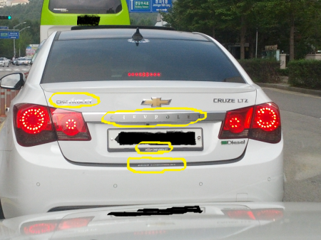
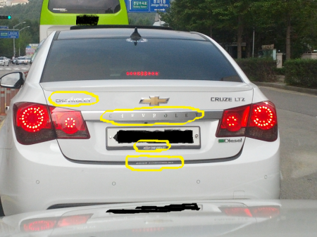

나대지 말 지어다.
10/15/2012
신호 대기 중 앞 차가 신기해서 찍었다.

대체 어떤 차종으로 오인되는 게 싫어서 저렇게나 많은 쉐보레 스티커가 필요했던 걸까? 이반 데니소비치의 하루 에
란 말이 나오는데 저 스티커들은 굳이 러시아 식자층에 물어볼 것도 없을 듯 하다.

대체 어떤 차종으로 오인되는 게 싫어서 저렇게나 많은 쉐보레 스티커가 필요했던 걸까? 이반 데니소비치의 하루 에
예술 과잉은 예술이 아니오, 그건 빵 대신 소금과 후추만 먹고 살라는 것과 뭐가 다른가 말이요. 삼대에 걸친 러시아 인텔리겐차의 기억을 우롱해도 분수가 있지.
란 말이 나오는데 저 스티커들은 굳이 러시아 식자층에 물어볼 것도 없을 듯 하다.
만나면 헤어질때까지 끊이지 않고 자기 이야기만 늘어놓는 사람들이 있다. 자신이 대화의 중심이 아니면 불안한 이런 사람들은 세상을 자기 중심으로 돌아가게 할 수 있다고 믿는 것 같다.
소싯적 무언가를 줄에 묶어 빙빙 돌리는 장난을 쳐 본 사람은 줄을 세게 잡아당길 수록 그만큼 더 밖으로 날아가려 한다는 것을 경험해 봤을 것이다. 또한 너무 오래 그리고 세게 돌리다 보면 손에서 빠지거나 묶었던 줄이 풀려 그게 유리창이 됬건 친구 머리통이든 무언가 크게 사단이 난다는 것 또한 익숙할 것이다.
사람과의 관계도 이와 다를 바 없다 생각한다.
아무리 자신의 능력 이상을 꾸미고 치장한다 할 지라도 시간이 흐르면 다 드러나기 마련이고 결국 "유명한 것으로 유명한" 처지가 되어 비웃음의 대상이 되기 마련이다.
장자도
소싯적 무언가를 줄에 묶어 빙빙 돌리는 장난을 쳐 본 사람은 줄을 세게 잡아당길 수록 그만큼 더 밖으로 날아가려 한다는 것을 경험해 봤을 것이다. 또한 너무 오래 그리고 세게 돌리다 보면 손에서 빠지거나 묶었던 줄이 풀려 그게 유리창이 됬건 친구 머리통이든 무언가 크게 사단이 난다는 것 또한 익숙할 것이다.
사람과의 관계도 이와 다를 바 없다 생각한다.
아무리 자신의 능력 이상을 꾸미고 치장한다 할 지라도 시간이 흐르면 다 드러나기 마련이고 결국 "유명한 것으로 유명한" 처지가 되어 비웃음의 대상이 되기 마련이다.
장자도
以出乎衆 爲心者, 何常出乎衆哉란 말로 함부로 나댐을 경고한 바 있으며 일단 나 부터 혹시 주제넘은 짓을 하고 있지는 않는지 찬찬히 살펴봐야겠다.
남 앞에 나대는 것 그것 자체가 목적인 자식이,
어찌 진정으로 무리 중에 뛰어난 사람이라 하겠는가